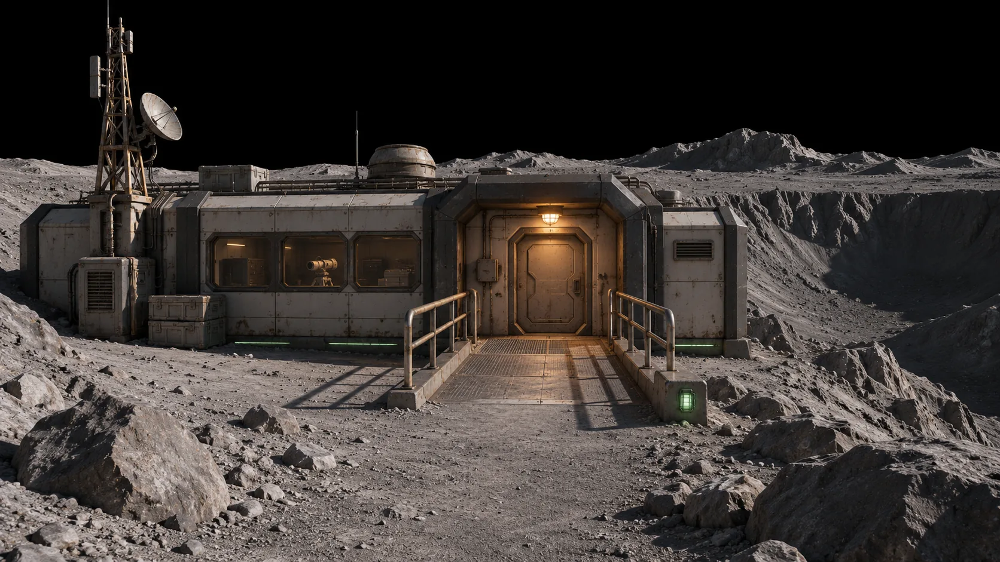

NIGHTGLASSLUNA · RECOVERED FIELD RECORD

LUNAR SURVEY ARCHIVE
Nightglass
Opening viewpoint…
CURRENT TASK
Recover the Nightglass record
Read your field dispatch before entering.
IN REACH
MOVE TO
Progress stays on this deviceSound starts with your expedition